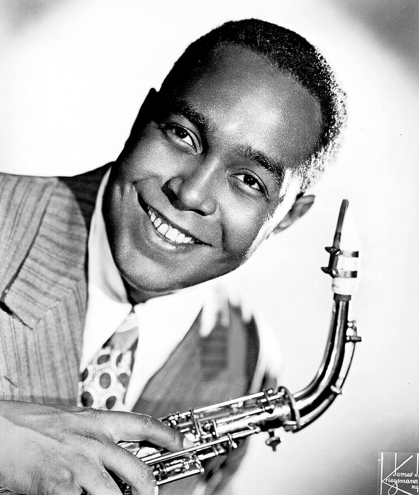
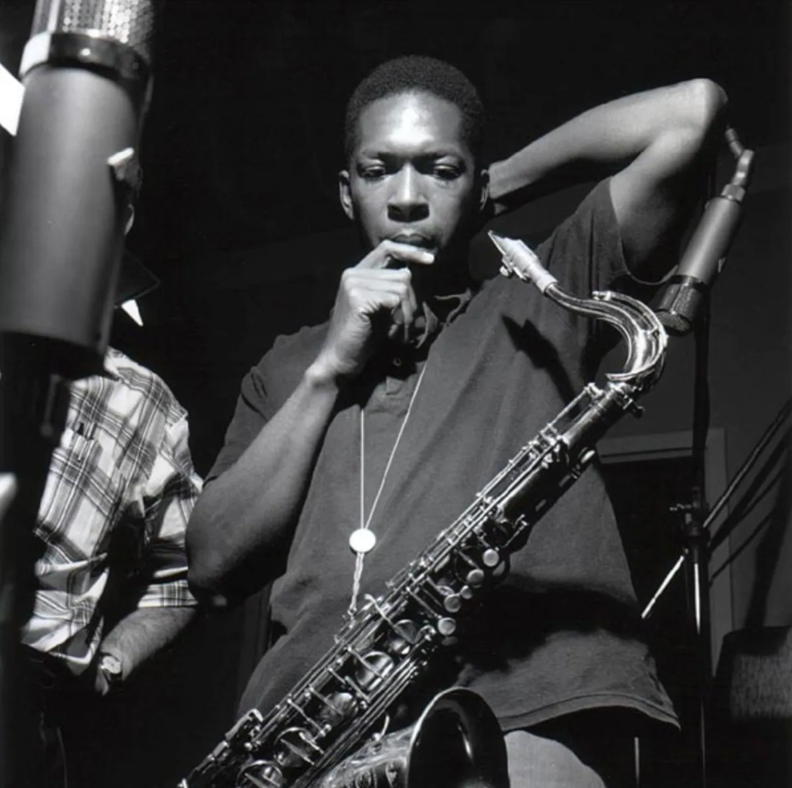

A Short Summary of Jazz
Jazz: America's original art form
Jazz music is a landmark of American culture. For almost two hundred years, the music has impacted
people all around the globe.
Notable Jazz Artists

Louis Armstrong

Charlie Parker

Ella Fitzgerald

John Coltrane
Jazz to me is a living music. It'sa a music that since its beginning has expressed the feelings, the
dreams, hopes, of the people.
Want to learn more about Jazz?
Sign up for our Jazz history newsletter by clicking the button on the right!